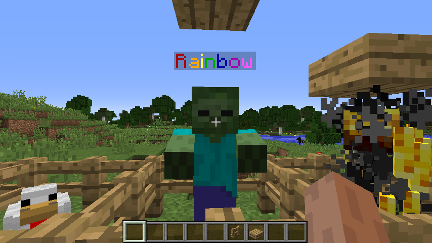

Entity Nametags in a Nutshell¶
While map pixels are limited to around 100 colors, entity nametags in Minecraft can have any possible RGB color available (at least of Minecraft 1.16.X). While this may seem that it would have a better quality compared to map pixels/dithering, it actually isn’t.
Usage of Entities¶
You would spawn one single entity per pixel in the height of the video player. Then, you would have extremely long names for them for the colors. You would update each row’s color based on the pixels that the video frame delivers.
The entity used doesn’t matter at all. You could particles, armorstands, or even pigs. However, in general you would use particles or armostands as it is easy to make them invisible to the player (instead of applying the invisibility potion effect to some other entity like a cow).
Downsides of Entities¶
While the benefit of entities are that they don’t occupy map slots, they can be controlled easily, their quality often lacks. RGB may seem nice, but due to limitations in packets, the quality the client receives is usually nowhere as close compared to actual maps. The reason due to this is because Map packets are able to be compressed and send more information to clients (each pixel by pixel) compared to entities. In fact, I believe the colors are stored in some sort of ByteBuffer in the NMS code.
However, entities still provide a solid way of video playback. They are pretty good for playing low resolution videos, and unlike map packets, will have a less likely hood of timing out the player from the size of the packets.